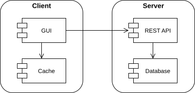
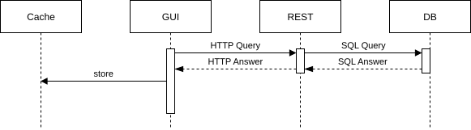
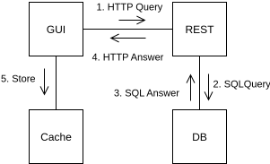

Conception : comment faire ?
- une infinité de manière ;
- choiser la plus adéquate aux besoins et moyens, actuels et futurs.
Architecture : structure du projet.
- impacte fortement l'écriture, la compréhension, le débogage, l'extension, le maintenance, etc.
- coût de la conception rapidement rentabilisé en rapidité et confort par la suite.
Dette technique : coût d'un choix passé, souvent d'autant plus coûteux que le projet est avancé.
- e.g. composants interdépendant complexifient les modifications jusqu'à casser l'intégralité du projet.
D'autres se sont plantés avant nous, ont appris de leurs erreurs, et ont partagé leur expérience :
- Bons principes : principes de programmation.
- Mauvais principes : code smell/design smell.
- Bons patrons de conceptions : design pattern.
- Mauvais patrons de conceptions : anti-pattern.
KISS : Keep it Simple, Stupide, restez simple. Appliquez ces principes avec raison sans vous perdez dedans.
Programmation Orientée Composant (POC) : découper son projet en plusieurs composants.
- transforme un problème complexe en sous-problèmes plus simples à résoudre.
- indépendance : pour les développer, tester, déboguer, etc. sans se soucier des autres.
- substituabilité : possibilité de remplacer un composant par un autre (e.g. nouvelle version).
- limite la portée des modifications : casser un composant ne casse pas les autres.
Découpage "horizontal" : composants "côtes à côtes", e.g. données et affichage :
- l'affichage est indépendante de la manière dont sont stockées les données.
- les données sont indépendantes de la manière dont elles sont affichées.
- Idéalement l'un n'a pas besoin de l'autre pour s'exécuter,
- API REST
- changer la source de données (e.g. simulée)
Une pléthore de découpages possibles, typiquement affichage, données, comportements/règles avec quelques variations, e.g. : MVC, MVA, MVP, MVVM, PAC, ADR, modèle de Seeheim, architecture 3-tiers, etc.
Autre découpage possible : en fonction des fonctionnalités, e.g. gestion des utilisateurs/produits/tâches.
- permet d'ajouter ou retirer des fonctionalités aisément sans impacter l'ensemble du projet.
💡 Ces différents découpages ne sont pas exclusifs.
💡 Un composant peut être redécoupé, e.g. l'affichage en structure, mise en forme, interactions.
💡 Un composant peut être redécoupé, e.g. l'affichage en structure, mise en forme, interactions.
Découpage "vertical" : un composant utilise (et est dépendant) d'un autre.
- e.g. l'affichage dépendant d'un composant graphique (e.g. bibliothèque graphique).
- changer l'implémentation du composant graphique n'impacte pas l'affichage.
- mais l'affichage ne peut s'exécuter sans le composant.
Principe d'encapsulation : le composant est vu comme une boîte noire, son utilisateur n'a pas besoin d'en connaître le fonctionnement interne.
💡 Pas toujours vrai : nécessité de comprendre le fonctionnement général de Git/SQL pour bien les utiliser.
💡 Pas toujours vrai : nécessité de comprendre le fonctionnement général de Git/SQL pour bien les utiliser.
Abstraction : grâce à l'encapsulation, permet des opérations en cachant les détails techniques, e.g. :
- : cache les vérifications et opérations effectuées par l'OS et le FS.
Couches d'abstraction (découpage vertical) :
- les détails techniques sont encapsulés par les couches les plus basses.
- les couches les plus hautes peuvent être une traduction du cahier des charges
- réutilise la logique et le langage métier.
- le client peut comprendre et modifier le code.
- DP Façade : cache un ensemble de classes et d'opérations complexes derrière une interface unique.
- DP Iterator : permet le parcours d'une structure indépendamment de son implémentation :
- écrire des algorithmes génériques.
- différents types de parcours possibles.
- Utilisé en interne par et .
- DAO (Data Access Object) : encapsule l'accès à des données persistantes.
- e.g. ,
- les méthodes effectuent les opérations via, e.g. des requêtes SQL, des commandes Shell, etc.
Découpage "éclaté" : découper le projet en fonctionnalités, chacune "éclatée" dans divers services.
- ≈ services : composants de l'architecture générale (e.g. GUI, API REST, Database, etc.).
- package : lot de composants correspondant à une fonctionnalité.
- le contenu de chaque package est déployé dans les différents services afin de les étendre.
Diagramme de déploiement : décrit les composants ainsi que les matériels sur lesquels ils sont déployés.

💡 Il est possible de préciser les caractéristiques (e.g. mémoire, processeur, etc.) des matériels.
💡 Il existe aussi des diagrammes de composants et des diagrammes de package.
💡 Il existe aussi des diagrammes de composants et des diagrammes de package.
- Les composants communiquent entre eux.
- différents types de messages (e.g. appel de fonction, requête REST, etc.).
- un composant doit comprendre les messages qu'il reçoit ("parler la même langue").
- spécifier un protocole de communication ≈ contrat (e.g. API REST, interface, etc.).
- Le composant doit être une boîte noire pour l'extérieur (cf encapsulation) :
- pas d'accès à ses éléments internes.
- interactions uniquement par le biais d'une interface (e.g. via DP façade).
Architecture monolithique : tout dans un même exécutable.
- Message = appels de fonctions (généralement).
- Synchrone : j'attends la réponse.
- Asynchrone : je n'attends pas la réponse.
Pour éviter certains problèmes, on distingue souvent l'enclenchement de l'action et son traitement :
- : j'enclenche l'action.
- : je traites l'action.
Service Oriented Architecture (SOA) : différents exécutables fournissant des services différents.
- appels de fonctions impossibles entre exécutables.
- on utilise alors des communications inter-processus (IPC) :
- Fichiers FIFO : pipes, sockets.
- Événements : message queue, signaux unix.
- Données : sémaphores, mémoire partagée.
Ne peut transmettre que des données binaires (e.g. JSON), nécessité de :
- Envoi : sérialiser le message.
- Réception : désérialiser le message.
Micro-services : les services sont sur des serveurs différents.
- communications par le biais de sockets.
- nécessité d'un protocole de communication (e.g. API REST).
- ⚠ Coût élevé des communications, bien plus qu'un simple appel de fonction.
Event-Driven Architecture (EDA) : abstrait des méthodes de communications précédentes.
- une source d'événement diffuse (broadcast) des événements ;
- les fonctions abonnées (subscribed) à cet événement sont appelées.
- DP Observer : la source stocke et appelle elle-même les fonctions abonnées.
- DP Reactor : une boucle d'événements appelle les fonctions abonnées (e.g. JS, serveurs, etc.).
💡 En fonction du contexte, la fonction abonnée peut être appelée listener ou handler.
- Interceptor DP
- Adapter
- Proxy : log, cache, etc.
- Mediator DP
- Broker : load balancing, redirect, etc.
- DP Commande : e.g. associer GUI btn à une action controler.
- Data Transfert Object : regrouper plusieurs requêtes avant d'envoyer
- Message queuing
- Chaîne de responsabilité : pour les handler, un seul s'en occupe.
Diagramme de séquence : dans le cadre d'un scénario donné, montre les interactions entre divers entités.

Diagramme de communication : ≈ séquence. Lorsqu'il y a trop d'entités et peu de messages.
